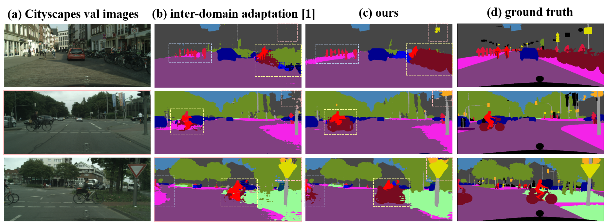
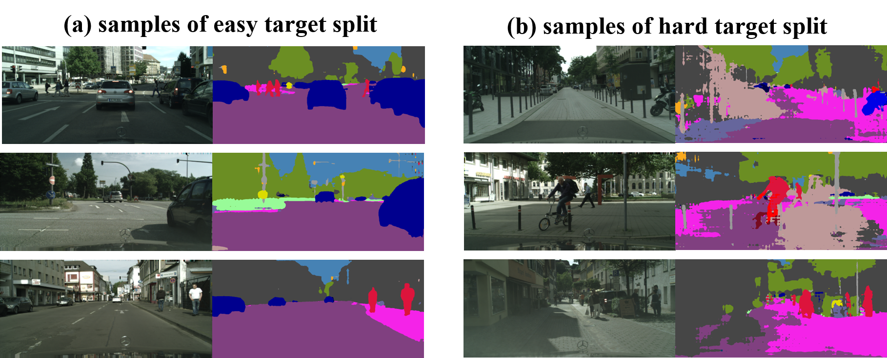

For domain adaptation, previous works have considered directly adapting models from the source data to the unlabeled target data (to reduce the inter-domain gap). Nonetheless, these techniques do not consider the large distribution gap among the target data itself (intra-domain gap). In this work, we propose a two-step self-supervised domain adaptation approach to minimize the inter-domain and intra-domain gap together. First, we conduct the inter-domain adaptation of the model; from this adaptation, we separate the target domain into an easy and hard split using an entropy-based ranking function. Finally, to decrease the intra-domain gap, we propose to employ a self-supervised adaptation technique from the easy to the hard split.
Results
Domain adaptation results from GTA5 to Cityscapes:

Easy samples and hard samples:

Video
Qualitative results on Cityscapes DemoVideo:
Notes: the trained on GTA5 results are from the segmentation model only trained by GTA5 24966 annotated data; the trained on Cityscapes results are from the segmentation model fully trained on Cityscapes 2975 annotated images. The results of our model are achieved by using GTA5 24966 labeled images with Cityscapes 2975 unlabeled images. Theoretically, the accuracy level of our results should be between trained on GTA5 and trained on Cityscapes.
Acknowldgements
This work is supported by Bosch (China) Investment Ltd.
BibTeX
@inproceedings{pan2020unsupervised,
title = {Unsupervised Intra-domain Adaptation for Semantic Segmentation through Self-Supervision},
author = {Pan, Fei and Shin, Inkyu and Rameau, Francois and Lee, Seokju and Kweon, In So},
booktitle = {IEEE Conference on Computer Vision and Pattern Recoginition (CVPR)},
year = {2020}
}
Comment: An adversarial learning method for domain adaptation on structured segmentation outputs space.